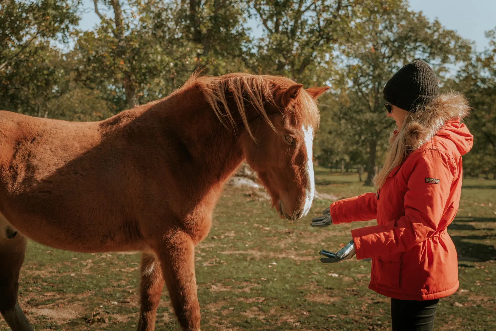

Conoce sus historias
Explora los 70 perfiles y encuentra el ser con cuya historia conectes.

Apadrinar · Amadrinar
Apadrinar es un acto desinteresado de amor: acompañar a un habitante, ayudar a cuidarlo y formar parte de su historia sin poseerlo.
Desde 10 € al mes
Aunque tus circunstancias no te permitan tenerlo contigo, puedes ayudar a que uno de los habitantes conserve algo que nunca debería perder: su libertad.
Podrás visitarlo con aviso previo y pasear a su lado si así lo desea. También puedes pedir información por WhatsApp y conocer su evolución. Cada habitante puede tener varios padrinos, porque la aportación mínima cubre solo una parte de lo que necesita.
Apadrinar es empatía: acercarte a ese ser, respetar su espacio y hacerle saber, mes a mes, que ya no está solo.
Apadrinamiento mensual
Cuando el cobro online esté activado, podrás completar aquí el apadrinamiento y pasar a la página segura de Stripe. El Santuario no almacena los datos de tu tarjeta.
Nuevo sistema de padrinos: estamos preparando la gestión directa del apadrinamiento mensual desde esta web. Mientras finalizamos el cobro automático, el formulario oficial sigue siendo la vía disponible.
Así funciona
Explora los 70 perfiles y encuentra el ser con cuya historia conectes.
Indica tus datos y la aportación mensual con la que quieres ayudar.
Recibe noticias y organiza visitas respetuosas con aviso previo.